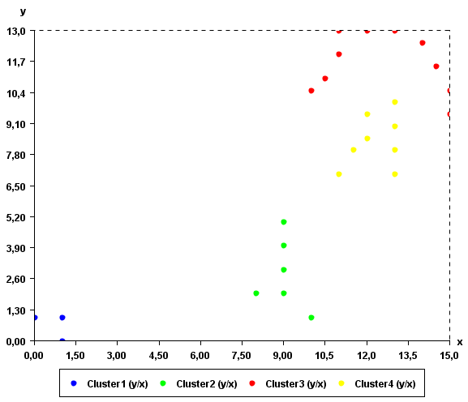

Using Optics to extract a cluster-ordering of points and DB-Scan style clusters (SPMF documentation)
This example explains how to run the Optics algorithm using the SPMF open-source data mining library.
What is OPTICS?
OPTICS is a classic clustering algorithm. It takes as input a set of instances (vectors of double values) and output a cluster-ordering of instances (points), that is a total order on the set of instances.
This "cluster-ordering" of points can then be used to generate density-based clusters similar to those generated by DBScan.
In the paper describing Optics, the authors also proposed authors tasks that can be done using the cluster-ordering of points such as interactive visualization and automatically extracting hierarchical clusters. Those tasks are not implemented here.
Implementation note: To avoid having a O(n^2) time complexity, this implementation uses a KD-Tree to store points internally.
In this implementation the user can choose between various distance functions to assess the similarity between vectors. SPMF offers the Euclidian distance, correlation distance, cosine distance, Manathan distance and Jaccard distance.
How to run this example?
To generate a cluster-ordering of points using OPTICS:
- If you are using the graphical interface, (1)
choose the "OPTICS-cluster-ordering" algorithm, (2) select the input file "inputDBScan2.txt",
(3) set the output file name (e.g. "output.txt")
(4) set minPts =2 and epsilon = 2, and (5) click "Run
algorithm".
Note that there is also an optional parameter called "separator". It can be used to read other types of input files where values are not separated by spaces. For example, for a file separated by the ',' character, the parameter "separator" would have to be set to ",". - If you want to execute this example from the command line,
then execute this command:
java -jar spmf.jar run OPTICS-cluster-ordering inputDBScan2.txt output.txt 2 2 in a folder containing spmf.jar and the example input file inputDBScan2.txt. - If you are using the source code version of SPMF, launch the file "MainTestOPTICS_extractClusterOrdering_saveToFile.java" in the package ca.pfv.SPMF.tests.
To generate a DB-Scan style cluster of points using OPTICS:
- If you are using the graphical interface, (1)
choose the "OPTICS-dbscan-clusters" algorithm, (2) select the input file "inputDBScan2.txt",
(3) set the output file name (e.g. "output.txt")
(4) set minPts =2, epsilon = 2 and epsilonPrime = 5,
and(5) click "Run algorithm".
Note that there is also an optional parameter called "separator". It can be used to read other types of input files where values are not separated by spaces. For example, for a file separated by the ',' character, the parameter "separator" would have to be set to ",". - If you want to execute this example from the command line,
then execute this command:
java -jar spmf.jar run OPTICS-dbscan-clusters inputDBScan2.txt output.txt 2 2 5 in a folder containing spmf.jar and the example input file inputDBScan2.txt. - If you are using the source code version of SPMF, launch the file "MainTestOPTICS_extractDBScan_saveToFile.java" in the package ca.pfv.SPMF.tests.
What is the input?
Optics takes as input (1) a set of instances (points) having a name and containing one or more double values, (2) a parameter minPts (a positive integer >=1) indicating the number of instances (points) that a core point need to have in its neighborhood (see paper about Optics for more details) and (3) a radius epsilon that define the neighborhood of a point. If clusters are generated, an extra parameter named epsilonPrime is also taken as parameter. This latter parameter can be set to the same value as epsilon or a different value (see paper for details).
The input file format is a text file containing several instances.
The first lines (optional) specify the name of the attributes used for describing the instances. In this example, two attributes will be used, named X and Y. But note that more than two attributes could be used. Each attribute is specified on a separated line by the keyword "@ATTRIBUTEDEF=", followed by the attribute name
Then, each instance is described by two lines. The first line (which is optional) contains the string "@NAME=" followed by the name of the instance. Then, the second line provides a list of double values separated by single spaces.
An example of input is provided in the file "inputDBScan2.txt" of the SPMF distribution. It contains 31 instances, each described by two attribute called X and Y.
@ATTRIBUTEDEF=X
@ATTRIBUTEDEF=Y
@NAME=Instance1
1 1
@NAME=Instance2
0 1
@NAME=Instance3
1 0
@NAME=Instance4
11 12
@NAME=Instance5
11 13
@NAME=Instance6
13 13
@NAME=Instance7
12 8.5
@NAME=Instance8
13 8
@NAME=Instance9
13 9
@NAME=Instance10
13 7
@NAME=Instance11
11 7
@NAME=Instance12
8 2
@NAME=Instance13
9 2
@NAME=Instance14
10 1
@NAME=Instance15
7 13
@NAME=Instance16
5 9
@NAME=Instance17
16 16
@NAME=Instance18
11.5 8
@NAME=Instance20
13 10
@NAME=Instance21
12 13
@NAME=Instance21
14 12.5
@NAME=Instance22
14.5 11.5
@NAME=Instance23
15 10.5
@NAME=Instance24
15 9.5
@NAME=Instance25
12 9.5
@NAME=Instance26
10.5 11
@NAME=Instance27
10 10.5
@NAME=Instance28
9 3
@NAME=Instance29
9 4
@NAME=Instance30
9 5
For example, the first instance is named "Instance1", and it is a vector with two values: 1 and 1 for the attributes X and Y, respectively.
This input file represents a set of 2D points. But note that, it is possible to use more than two attributes to describe instances. To give a better idea of what the input file looks like, here is a visual representation:

The distance function used by Optics is the Euclidian distance
What is the output?
Optics generates a a so-called cluster-ordering of points, which is a list of points with their reachability distances. For example, for minPts = 2 and epsilon = 2, the following cluster ordering is generated, where each line indicates respresent an instance (a name and its vector of values) and a reachability distance. Note that a reachability distance equals to "infinity" means "UNDEFINED" in the original paper.
Cluster orderings
Instance2 0.0 1.0 Infinity
Instance1 1.0 1.0 1.0
Instance3 1.0 0.0 1.0
Instance14 10.0 1.0 Infinity
Instance13 9.0 2.0 1.4142135623730951
Instance28 9.0 3.0 1.0
Instance12 8.0 2.0 1.0
Instance29 9.0 4.0 1.0
Instance30 9.0 5.0 1.0
Instance16 5.0 9.0 Infinity
Instance15 7.0 13.0 Infinity
Instance27 10.0 10.5 Infinity
Instance26 10.5 11.0 0.7071067811865476
Instance4 11.0 12.0 1.118033988749895
Instance5 11.0 13.0 1.0
Instance21 12.0 13.0 1.0
Instance6 13.0 13.0 1.0
Instance21 14.0 12.5 1.118033988749895
Instance22 14.5 11.5 1.118033988749895
Instance23 15.0 10.5 1.118033988749895
Instance24 15.0 9.5 1.0
Instance11 11.0 7.0 Infinity
Instance18 11.5 8.0 1.118033988749895
Instance7 12.0 8.5 0.7071067811865476
Instance25 12.0 9.5 1.0
Instance8 13.0 8.0 1.118033988749895
Instance9 13.0 9.0 1.0
Instance10 13.0 7.0 1.0
Instance20 13.0 10.0 1.0
Instance17 16.0 16.0 Infinity
The cluster ordering found by Optics can be used to do various things. Among others, it can be used to generate DBScan style clusters based on the density of points. This feature is implemented in SPMF and is called ExtractDBScanClusters() in the original paper presenting OPTICS. When extracting DBscan clusters it is possible to specify a different epsilon value than the one used to extract the cluster ordering. This new epsilon value is called "epsilonPrime" (see the paper for details). By extracting clusters with epsilonPrime =5, we can obtain three clusters.
@ATTRIBUTEDEF=X
@ATTRIBUTEDEF=Y
[Instance1 1.0 1.0][Instance3 1.0 0.0][Instance2 0.0 1.0]
[Instance14 10.0 1.0][Instance13 9.0 2.0][Instance28 9.0 3.0][Instance12 8.0 2.0][Instance29 9.0 4.0][Instance30 9.0 5.0]
[Instance27 10.0 10.5][Instance26 10.5 11.0][Instance4 11.0 12.0][Instance5 11.0 13.0][Instance21 12.0 13.0][Instance6 13.0 13.0][Instance21 14.0 12.5][Instance22 14.5 11.5][Instance23 15.0 10.5][Instance24 15.0 9.5]
[Instance11 11.0 7.0][Instance18 11.5 8.0][Instance7 12.0 8.5][Instance25 12.0 9.5][Instance8 13.0 8.0][Instance9 13.0 9.0][Instance10 13.0 7.0][Instance20 13.0 10.0]
The output file format is defined as follows.The output file format is defined as follows. The first few lines indicate the attribute names. Each attribute is specified on a separated line with the keyword "ATTRIBUTEDEF=" followed by the attribute name (a string). Then, the list of clusters is indicated. Each cluster is specified on a separated line, listing the instances contained in the cluster. An instance is a name followed by a list of double values separated by " " and between the "[" and "]" characters.
The clusters found by the algorithm can be viewed visually using the "Cluster Viewer" provided in SPMF. If you are using the graphical interface of SPMF, click the checkbox "Cluster Viewer" before pressing the "Run Algorithm" button. The result will be displayed in the Cluster Viewer.

Note that it is normal that OPTICS may generate a cluster having less than minPts in some cases. Note also that OPTICS eliminate points that are seen as noise
By running OPTICS on the previous input file and minPts =2 and epsilon=5, we obtain the following output file containing 3 clusters:
Applying OPTICS to time series
Note that the OPTICS algorithm implementation in SPMF can also be applied to time series database such as the file contextSAX.txt in the SPMF distribution. To apply this algorithm to time series, it is necessary to set the "separator" parameter of this algorithm to "," since time series files separate values by "," instead of separating by spaces.
Where can I get more information about OPTICS?
OPTICS is a quite popular data mining algorithm. The original paper proposing this algorithm is:
Mihael Ankerst, Markus M. Breunig, Hans-Peter Kriegel, Jörg Sander (1999). OPTICS: Ordering Points To Identify the Clustering Structure. ACM SIGMOD international conference on Management of data. ACM Press. pp. 49–60.